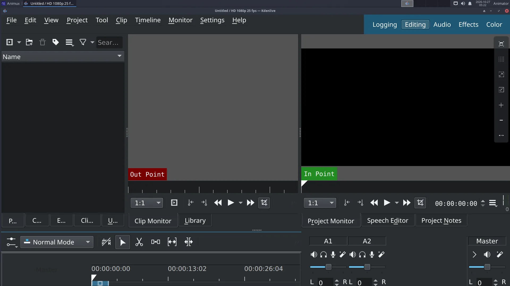

| Kdenlive | |
|---|---|
| Menu | NLV Editors → Kdenlive |
| Version | 22.12.3 |
| Command | kdenlive |
| Good for | Beginner |
| Files | .kdenlive projects; almost every video, audio and image format |
| Licence | GPL-3.0 |
| Website | kdenlive.org |
When your shots are rendered, a video editor puts them together with dialogue, music and titles. Kdenlive is powerful and still easy to start with.


The window#
| Area | Use |
|---|---|
| Project Bin (top left) | all your clips: videos, image sequences, sound, titles |
| Clip Monitor / Project Monitor (top right) | play the selected clip / the whole edit |
| Effects, Transitions (tabs) | drag them onto clips |
| Timeline (bottom) | video tracks (V1, V2…) and audio tracks (A1, A2…) |
Edit a film in six steps#
- Project → Project Settings: choose the format of your film, for example HD 1080p 24 fps. Do this first.
- Add clips: right-click in the Project Bin → Add Clip or Folder (or drag files from the file manager). For a numbered image sequence (
0001.png,0002.png…), tick Import image sequence in the file dialog. - Drag clips to the timeline in order. Trim a clip by dragging its ends; cut at the playhead with Shift+R.
- Sound: drag music and dialogue onto the audio tracks. Change volume with the Volume effect or the clip's line.
- Titles: right-click the Bin → Add Title Clip. Transitions: overlap two clips on different tracks and add a Dissolve (Wipe, …).
- Export: Project → Render (Ctrl+Enter) → preset MP4-H264/AAC → choose the file name → Render to File.
Big projects run slowly?
Turn on proxy clips (Project Settings → Proxy). Kdenlive edits small copies and uses the originals only for the final render.
Good export settings#
| For | Settings |
|---|---|
| YouTube / Vimeo | MP4-H264/AAC, same resolution and frame rate as the project, quality 18–23 |
| Festival / archive | ProRes or DNxHR (in the render presets) or a PNG image sequence + WAV |
| Phone / messaging | MP4-H264, 1280×720 |
Kdenlive also renders from the command line using the melt program it is built on.
Learn more: https://docs.kdenlive.org/ · Tutorial: Edit your film in Kdenlive.